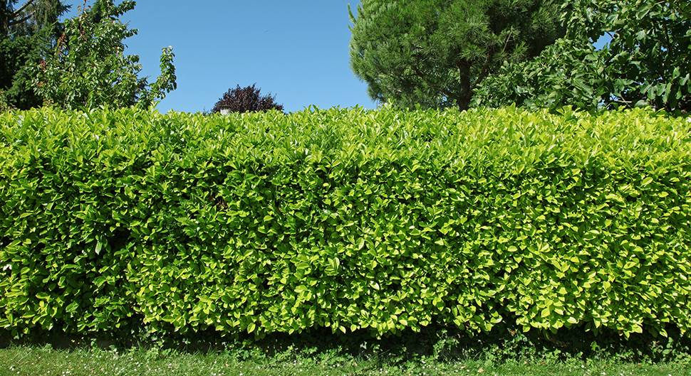
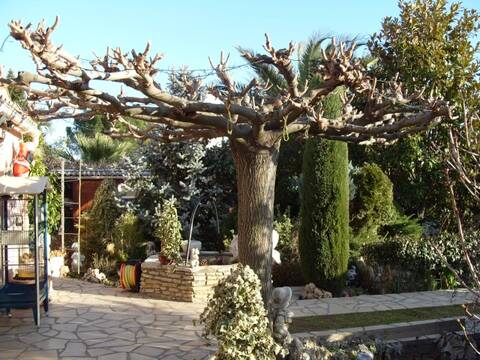
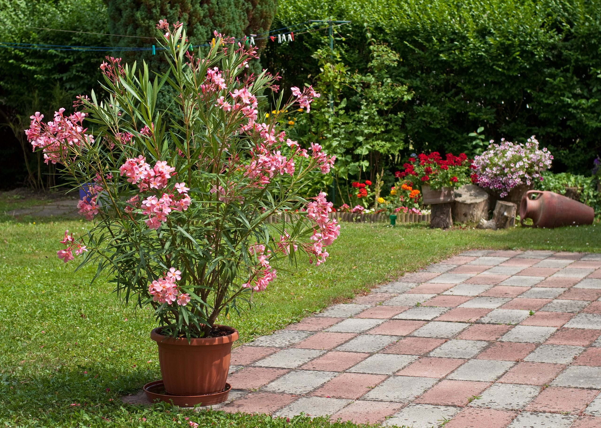

Entretien des végétaux
Travaux de taille réalisés sur des haies et un mûrier-platane dans le cadre de chantiers.
Étudiant en BTS Aménagement paysager, je présente ici mon parcours, mon expérience professionnelle et les chantiers auxquels j'ai participé.

Je m'appelle Jérémie Bloch-Barrial, j'ai 20 ans et je suis étudiant en BTS Aménagement paysager.
Ma formation et mes expériences en entreprise me permettent de découvrir concrètement les travaux liés à l'entretien et à l'aménagement des espaces paysagers.
Ce portfolio présente les informations essentielles de mon parcours ainsi que plusieurs chantiers auxquels j'ai participé.
Mon objectif professionnel :
[À compléter : métier recherché, type d'entreprise
ou spécialité souhaitée.]
Mon parcours scolaire et professionnel dans le domaine de l'aménagement paysager.
CFA Agricole de l'Hérault
Lycée Frédéric Bazille
Expérience professionnelle en entreprise dans le secteur des espaces verts.
Participation à des chantiers comprenant des travaux de taille, de tonte et de plantation.
Les travaux mentionnés dans mes réalisations sont présentés ci-dessous. Mes autres compétences et les outils que je maîtrise pourront être ajoutés au fur et à mesure.
Travaux de taille réalisés sur des haies et un mûrier-platane dans le cadre de chantiers.
Participation à des travaux de plantation de végétaux dans le cadre d'un chantier d'aménagement paysager.
Participation à des travaux de tonte sur une petite parcelle.
Participation à des travaux de décaissage dans le cadre d'un chantier paysager.
Aperçu de travaux réalisés dans le cadre de chantiers avec l'entreprise Aqueduc Jardin.

Participation à un chantier de taille de haie visant à entretenir les végétaux et à soigner l'aspect général de l'espace.

Participation à un chantier de taille d'un mûrier-platane dans le cadre de travaux d'entretien paysager.

Participation à la plantation de lauriers-roses et d'un yucca, associée à des travaux de décaissage sur le chantier.
Les photographies doivent correspondre aux chantiers présentés. Remplace-les par tes propres photos lorsque cela est possible. Tu peux également ajouter des vues avant/après et préciser ton rôle sur chaque chantier.
[À compléter : présente ici le poste recherché, ton projet après le BTS ou le type de missions auxquelles tu souhaites participer.]
Pour toute question concernant mon parcours, mes réalisations ou une éventuelle opportunité professionnelle, vous pouvez me contacter par téléphone ou par e-mail.
Vous souhaitez échanger sur un chantier, une opportunité professionnelle ou un projet d'aménagement paysager ?
M'envoyer un e-mail →